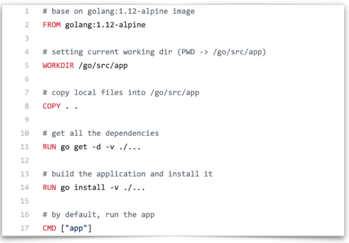

主要参考资料
容器基本概念
什么是容器与镜像？如何构建容器与镜像
什么是容器
在介绍容器的具体概念之前，先简单回顾一下操作系统是如何管理进程的。
首先，当我们登录到操作系统之后，可以通过 ps 等操作看到各式各样的进程，这些进程包括系统自带的服务和用户的应用进程。那么，这些进程都有什么样的特点？
- 这些进程可以相互看到、相互通信；
- 它们使用的是同一个文件系统，可以对同一个文件进行读写操作；
- 这些进程会使用相同的系统资源。
这样的三个特点会带来什么问题呢？
- 因为这些进程能够相互看到并且进行通信，高级权限的进程可以攻击其他进程；
- 因为它们使用的是同一个文件系统，因此会带来两个问题：这些进程可以对于已有的数据进行增删改查，具有高级权限的进程可能会将其他进程的数据删除掉，破坏掉其他进程的正常运行；此外，进程与进程之间的依赖可能会存在冲突，如此一来就会给运维带来很大的压力；
- 因为这些进程使用的是同一个宿主机的资源，应用之间可能会存在资源抢占的问题，当一个应用需要消耗大量 CPU 和内存资源的时候，就可能会破坏其他应用的运行，导致其他应用无法正常地提供服务。
针对上述的三个问题，如何为进程提供一个独立的运行环境呢？
针对不同进程使用同一个文件系统所造成的问题而言，Linux 和 Unix 操作系统可以通过 chroot 系统调用将子目录变成根目录，达到视图级别的隔离；进程在 chroot 的帮助下可以具有独立的文件系统，对于这样的文件系统进行增删改查不会影响到其他进程；
因为进程之间相互可见并且可以相互通信，使用 Namespace 技术来实现进程在资源的视图上进行隔离。在 chroot 和 Namespace 的帮助下，进程就能够运行在一个独立的环境下了；
但在独立的环境下，进程所使用的还是同一个操作系统的资源，一些进程可能会侵蚀掉整个系统的资源。为了减少进程彼此之间的影响，可以通过 Cgroup 来限制其资源使用率，设置其能够使用的 CPU 以及内存量。
那么，应该如何定义这样的进程集合呢？
其实，容器就是一个视图隔离、资源可限制、独立文件系统的进程集合。所谓“视图隔离”就是能够看到部分进程以及具有独立的主机名等；控制资源使用率则是可以对于内存大小以及 CPU 使用个数等进行限制。容器就是一个进程集合，它将系统的其他资源隔离开来，具有自己独立的资源视图。
容器具有一个独立的文件系统，因为使用的是系统的资源，所以在独立的文件系统内不需要具备内核相关的代码或者工具，我们只需要提供容器所需的二进制文件、配置文件以及依赖即可。只要容器运行时所需的文件集合都能够具备，那么这个容器就能够运行起来。
什么是镜像
综上所述，我们将这些容器运行时所需要的所有的文件集合称之为容器镜像。
那么，一般都是通过什么样的方式来构建镜像的呢？通常情况下，我们会采用 Dockerfile 来构建镜像，这是因为 Dockerfile 提供了非常便利的语法糖，能够帮助我们很好地描述构建的每个步骤。当然，每个构建步骤都会对已有的文件系统进行操作，这样就会带来文件系统内容的变化，我们将这些变化称之为 changeset。当我们把构建步骤所产生的变化依次作用到一个空文件夹上，就能够得到一个完整的镜像。
changeset 的分层以及复用特点能够带来几点优势：
第一，能够提高分发效率，简单试想一下，对于大的镜像而言，如果将其拆分成各个小块就能够提高镜像的分发效率，这是因为镜像拆分之后就可以并行下载这些数据；
第二，因为这些数据是相互共享的，也就意味着当本地存储上包含了一些数据的时候，只需要下载本地没有的数据即可，举个简单的例子就是 golang 镜像是基于 alpine 镜像进行构建的，当本地已经具有了 alpine 镜像之后，在下载 golang 镜像的时候只需要下载本地 alpine 镜像中没有的部分即可；
第三，因为镜像数据是共享的，因此可以节约大量的磁盘空间，简单设想一下，当本地存储具有了 alpine 镜像和 golang 镜像，在没有复用的能力之前，alpine 镜像具有 5M 大小，golang 镜像有 300M 大小，因此就会占用 305M 空间；而当具有了复用能力之后，只需要 300M 空间即可。
如何构建镜像
如下图所示的 Dockerfile 适用于描述如何构建 golang 应用的。

如图所示：
- FROM 行表示以下的构建步骤基于什么镜像进行构建，正如前面所提到的，镜像是可以复用的；
- WORKDIR 行表示会把接下来的构建步骤都在哪一个相应的具体目录下进行，其起到的作用类似于 Shell 里面的 cd；
- COPY 行表示的是可以将宿主机上的文件拷贝到容器镜像内；
- RUN 行表示在具体的文件系统内执行相应的动作。当我们运行完毕之后就可以得到一个应用了；
- CMD 行表示使用镜像时的默认程序名字。
当有了 Dockerfile 之后，就可以通过 docker build 命令构建出所需要的应用。构建出的结果存储在本地，一般情况下，镜像构建会在打包机或者其他的隔离环境下完成。
那么，这些镜像如何运行在生产环境或者测试环境上呢？这时候就需要一个中转站或者中心存储，我们称之为 docker registry，也就是镜像仓库，其负责存储所有产生的镜像数据。我们只需要通过 docker push 就能够将本地镜像推动到镜像仓库中，这样一来，就能够在生产环境上或者测试环境上将相应的数据下载下来并运行了。
如何运行容器？
运行一个容器一般情况下分为三步：
- 第一步：从镜像仓库中将相应的镜像下载下来；
- 第二步：当镜像下载完成之后就可以通过 docker images 来查看本地镜像，这里会给出一个完整的列表，我们可以在列表中选中想要的镜像；
- 第三步：当选中镜像之后，就可以通过 docker run 来运行这个镜像得到想要的容器，当然可以通过多次运行得到多个容器。一个镜像就相当于是一个模板，一个容器就像是一个具体的运行实例，因此镜像就具有了一次构建、到处运行的特点。
小结
简单回顾一下，容器就是和系统其它部分隔离开来的进程集合，这里的其他部分包括进程、网络资源以及文件系统等。而镜像就是容器所需要的所有文件集合，其具备一次构建、到处运行的特点。
容器的生命周期
容器运行时的生命周期
容器是一组具有隔离特性的进程集合，在使用 docker run 的时候会选择一个镜像来提供独立的文件系统并指定相应的运行程序。这里指定的运行程序称之为 initial 进程，这个 initial 进程启动的时候，容器也会随之启动，当 initial 进程退出的时候，容器也会随之退出。
因此，可以认为容器的生命周期和 initial 进程的生命周期是一致的。当然，因为容器内不只有这样的一个 initial 进程，initial 进程本身也可以产生其他的子进程或者通过 docker exec 产生出来的运维操作，也属于 initial 进程管理的范围内。当 initial 进程退出的时候，所有的子进程也会随之退出，这样也是为了防止资源的泄漏。
但是这样的做法也会存在一些问题，首先应用里面的程序往往是有状态的，其可能会产生一些重要的数据，当一个容器退出被删除之后，数据也就会丢失了，这对于应用方而言是不能接受的，所以需要将容器所产生出来的重要数据持久化下来。容器能够直接将数据持久化到指定的目录上，这个目录就称之为数据卷。
数据卷有一些特点，其中非常明显的就是数据卷的生命周期是独立于容器的生命周期的，也就是说容器的创建、运行、停止、删除等操作都和数据卷没有任何关系，因为它是一个特殊的目录，是用于帮助容器进行持久化的。简单而言，我们会将数据卷挂载到容器内，这样一来容器就能够将数据写入到相应的目录里面了，而且容器的退出并不会导致数据的丢失。
通常情况下，数据卷管理主要有两种方式：
- 第一种是通过 bind 的方式，直接将宿主机的目录直接挂载到容器内；这种方式比较简单，但是会带来运维成本，因为其依赖于宿主机的目录，需要对于所有的宿主机进行统一管理。
- 第二种是将目录管理交给运行引擎。
容器项目的架构
moby 容器引擎架构
moby 是目前最流行的容器管理引擎，moby daemon 会对上提供有关于容器、镜像、网络以及 Volume的管理。moby daemon 所依赖的最重要的组件就是 containerd，containerd 是一个容器运行时管理引擎，其独立于 moby daemon ，可以对上提供容器、镜像的相关管理。
containerd 底层有 containerd shim 模块，其类似于一个守护进程，这样设计的原因有几点：
首先，containerd 需要管理容器生命周期，而容器可能是由不同的容器运行时所创建出来的，因此需要提供一个灵活的插件化管理。而 shim 就是针对于不同的容器运行时所开发的，这样就能够从 containerd 中脱离出来，通过插件的形式进行管理。
其次，因为 shim 插件化的实现，使其能够被 containerd 动态接管。如果不具备这样的能力，当 moby daemon 或者 containerd daemon 意外退出的时候，容器就没人管理了，那么它也会随之消失、退出，这样就会影响到应用的运行。
最后，因为随时可能会对 moby 或者 containerd 进行升级，如果不提供 shim 机制，那么就无法做到原地升级，也无法做到不影响业务的升级，因此 containerd shim 非常重要，它实现了动态接管的能力。
容器 VS.VM
容器和 VM 之间的差异
VM 利用 Hypervisor 虚拟化技术来模拟 CPU、内存等硬件资源，这样就可以在宿主机上建立一个 Guest OS，这是常说的安装一个虚拟机。
每一个 Guest OS 都有一个独立的内核，比如 Ubuntu、CentOS 甚至是 Windows 等，在这样的 Guest OS 之下，每个应用都是相互独立的，VM 可以提供一个更好的隔离效果。但这样的隔离效果需要付出一定的代价，因为需要把一部分的计算资源交给虚拟化，这样就很难充分利用现有的计算资源，并且每个 Guest OS 都需要占用大量的磁盘空间，比如 Windows 操作系统的安装需要 10~30G 的磁盘空间，Ubuntu 也需要 5~6G，同时这样的方式启动很慢。正是因为虚拟机技术的缺点，催生出了容器技术。
容器是针对于进程而言的，因此无需 Guest OS，只需要一个独立的文件系统提供其所需要文件集合即可。所有的文件隔离都是进程级别的，因此启动时间快于 VM，并且所需的磁盘空间也小于 VM。当然了，进程级别的隔离并没有想象中的那么好，隔离效果相比 VM 要差很多。
总结
- 容器是一个进程集合，具有自己独特的视图视角；
- 镜像是容器所需要的所有文件集合，其具备一次构建、到处运行的特点；
- 容器的生命周期和 initial 进程的生命周期是一样的；
- 容器和 VM 相比，各有优劣，容器技术在向着强隔离方向发展。